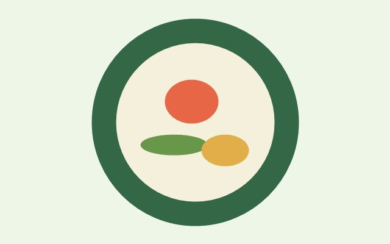

Reduce Food Waste • Feed People • Protect the Environment

Connect surplus food with people who need it. Our Smart Food Waste Management system helps reduce food waste and support the community.
Donate FoodSmart Food Waste Management is a platform designed to reduce food wastage by connecting food donors, volunteers and people who need food.
The system allows users to donate excess food, volunteers to collect and deliver food, and administrators to manage the complete system.
To reduce food waste and make surplus food available to people who need it.
A society where no usable food is wasted and everyone has access to food.
Build a smart digital platform that connects donors, volunteers and beneficiaries.
Have extra food? Donate it to someone who needs it.
Available food donations will appear here.
Help collect and deliver donated food to people who need it.
Donors register and upload information about their surplus food.
Volunteers can view available food donations near them.
Volunteers collect the donated food.
Food is delivered to people or organizations who need it.
Usable food is saved instead of being thrown away.
Smart Food Waste Management
BTech Computer Science & Engineering
Have questions or suggestions? Contact our team.